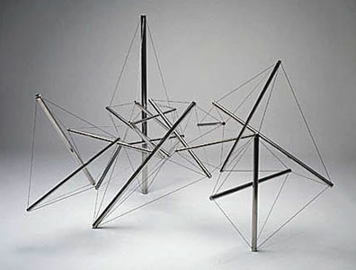
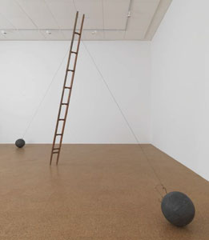
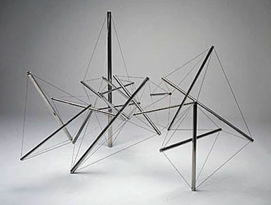
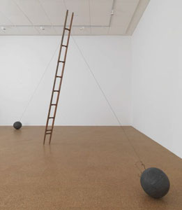

stasis
stasis  mechanism
mechanism  radical
art homepage
radical
art homepage
to tether
Kenneth Snelson: Needle Tower
II, 1968 |
 |
 |
stasis
to tether
Kenneth Snelson: Needle Tower II, 1968

Kenneth Snelson: Mozart, 1981-1982

Joseph Beuys: Scala Napoletana, 1985